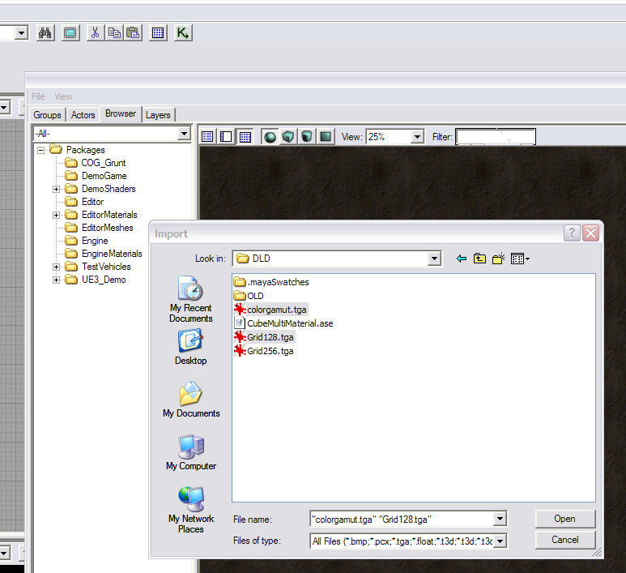
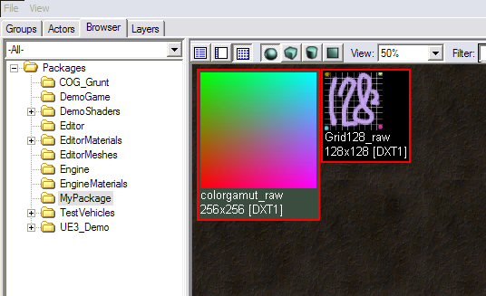
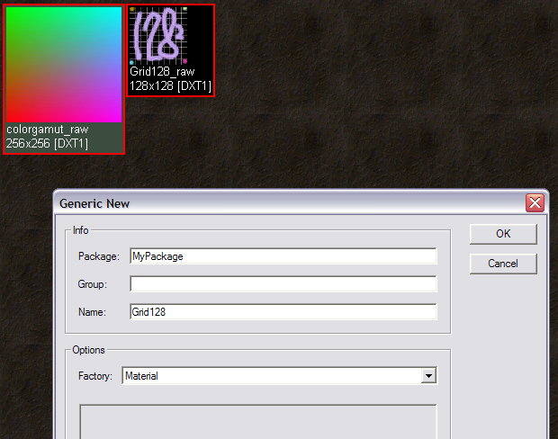
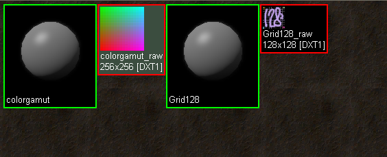
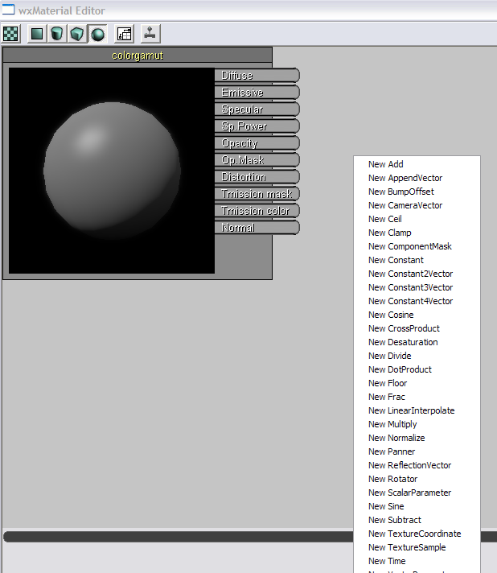
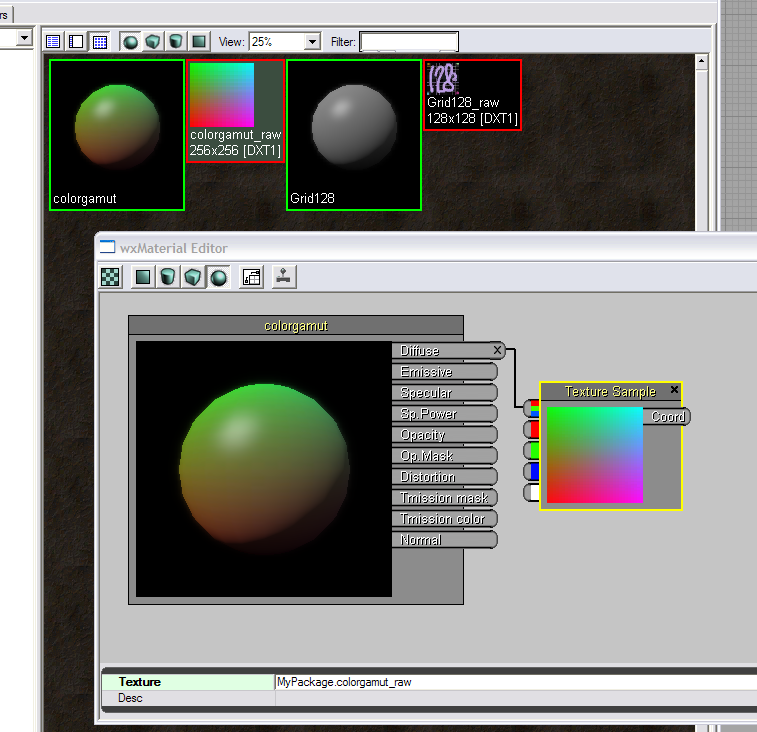
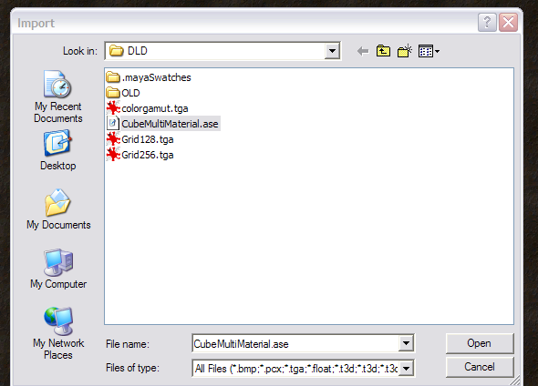
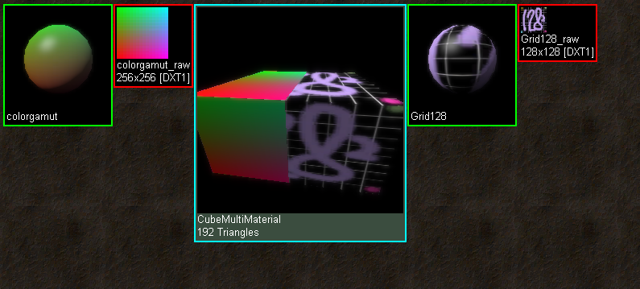
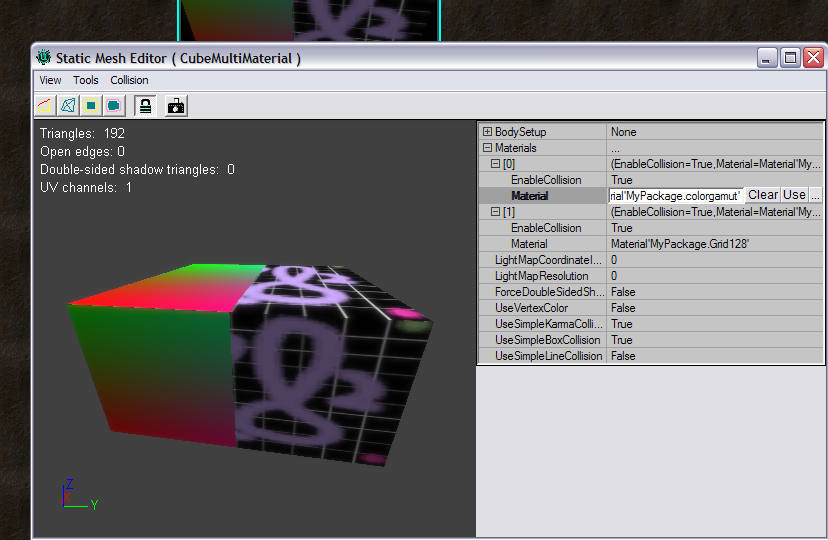

Importing Meshes Tutorial
Document Summary: A primer on how to take mesh geometry that was exported from a 3D modeling program using the ActorX export plugin tools, and import it into the Unreal Engine and apply multiple materials.
Document Changelog: Created by Erik de Neve?.
Overview
This is a step-by-step primer on how to import a static mesh with multiple material assignments that was exported from 3D Modeling programs using the ActorX plugin.
Getting Content Into the Engine
Importing Mesh Geometry
To import a Render mesh, use the Generic Browser, which can be opened
using its button on the main menu bar. From there, select Import from the File Menu; and select the raw textures that were used on the mesh – find the .ASE files – and click Open. A Generic Import window will open with several fields to be filled in.

Name the new package (by default named "MyPackage"). Fill in a Group and change the Name, if desired.
Groups are a convenient way to organize content within a package. A group can be created for each type of content, such as "Meshes" and "Textures"; or by theme, such as "Soldier1" and "Soldier2." The Group field can also be left blank, resulting in all content being kept together in one package.
One thing to consider is the polycount of the objects intended for import. There is a 32,000 vert limit on importing meshes right now; although technically that could be increased easily. Ideally, it is best to bring a in a lower-res model with a normal map.
When prompted for the package, group, and name, for each texture, type in the appropriate package and texture name. To have the assignments to work automatically when importing the mesh, be sure to use texture names that are NOT identical to the file names, since these are not the final materials yet. For example, here the extension _raw was used.
Important update: UE3 codebases since November 29, 2004 have an import art path which uses the material names, not the raw bitmap names, from the ASE file for use with the automatic material matching in the Unreal Editor. If, for a material slot, there are no matching material name fields in the ASE, the importer falls back to using the bitmap filename field. A warning: early versions of this new code (December 2004) would collapse a material slot if no matching material is found in the editor for that slot.
IMPORTANT: It is the name of the Shading Groups (NOT the names of the Materials) in Maya which must match the names of the Materials in the Unreal Editor in order for automatic matching to occur.

Importing Materials
Now it is time to create the actual materials. Right-click on an empty part of the Generic Browser and choose "New Material". This is done twice, and this time the original, short texture names should be used (without file extensions.)

There should now be two 'empty' materials.

The two materials can be linked by right-clicking on the material, which should open the Material Editor. From there, right-click on empty space and select "New TextureSample".

This box we link up as illustrated. More complex linkups with multiple textures are possible, of course - see also the MaterialsTutorial
Right clicking on the TextureSample box opens the properties. We assign the raw texture to it ( which we selected outside the material editor, in the generic browser, and then clicked on the 'use' (arrow) button.)

The same steps are used for the other material. Once they both have the correct names and texture linkups, it's time to import the actual cube.
Creating and assigning materials
Select Import from the File Menu, and import the .ASE cube into the same package.

Immediately, the textures are assigned like they were in Maya, because the two materials were prepared with the proper names in this package.

Note that everything does not necessarily have to be done in this order all the time. You can always import a static mesh first, and assign, or re-assign whichever material you want to whichever material slot. The slots are accessed by right-clicking on the cube, which opens the static mesh editor. Expanding the materials properties shows us the slots. These can be reassigned - the 'Use' button will put any existing material into the slot. You can even select other materials in other packages in the Generic Browser, and then press 'Use'.

Important!
You are viewing documentation for the Unreal Development Kit (UDK).
If you are looking for the Unreal Engine 4 documentation, please visit the Unreal Engine 4 Documentation site.